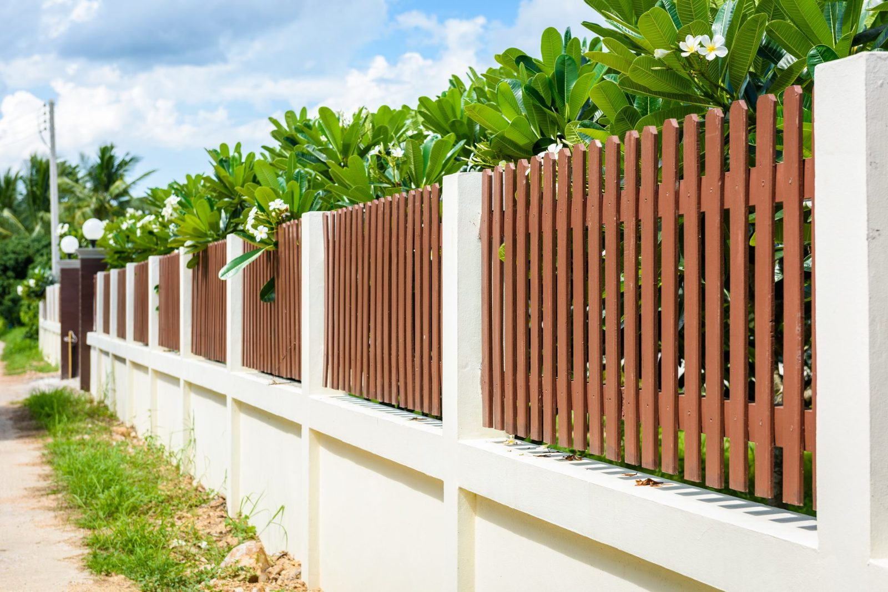

In This Guide
- The right height starts with what the fence is for. Privacy, a boundary line, pet containment, and security each point to a different answer.
- Slope, uneven ground, and gate openings change how tall a fence looks and how it has to be built, even when the panels are the same.
- HOA rules and city or parish limits set the ceiling, so confirm both before you settle on a number.
- Taller fences catch more wind, need more material, and cost more to maintain, which matters in a Louisiana storm season.
Most people pick a fence height by picturing the finished look, then discover the yard has other ideas. The ground slopes, the gate needs room to swing, a neighbor has a window nearby, or the HOA has a rule nobody mentioned. Height is a decision with several moving parts, and it is easier to make when you weigh them one at a time.
This guide focuses on the factors that shape how tall a fence should be. If you want the steps for finding the limits that apply to your address, see our companion piece on fence height regulations. A local fence company can help you turn both into a plan.
The Four Factors at a Glance
Nearly every height decision comes back to these four. The sections below take each one in turn.
What the Fence Is For
Privacy, boundary marking, pet containment, and security each call for a different height and style.
Slope and Ground
Uneven terrain changes how tall a fence looks, how it is built, and how height is measured.
Gates and Openings
Gates add weight and movement, so they shape post strength, swing room, and finished height.
Rules and Neighbors
City or parish limits, HOA standards, and neighbor relations set the ceiling for what you can build.
Purpose Comes First
Start with the job. A fence that solves a real problem is worth its height, and a fence that only adds inches is not.
Privacy
If the goal is screening the yard from the street or a neighbor, you need enough height to block sight lines from where people actually stand. Solid boards or panels do this best. Height alone helps less than you would think if the fence is see-through.
Marking a Boundary
If you only want to show where the lot ends, a lower fence works. Low fences keep the yard feeling open, cost less, and are usually easier to get approved.
Keeping Pets and Children Safe
A fence for pets and small children has to be tall enough that they cannot climb or jump it, and the gaps have to be small enough that they cannot slip through. A pool adds another layer, since pool barriers often follow their own rules. Ask your city or parish what applies.
Security
For deterring entry, height and design work together. A tall fence with an easy toehold does less than a moderate one that is hard to grip or climb. Open styles also let neighbors and passersby see what is happening in the yard.
Slope, Grade, and Uneven Ground
Even in flat parts of Louisiana, a yard can sit above or below the neighbor's, or slope toward a drainage swale. Terrain affects a fence in three practical ways.

- Measurement. Height can be measured from the ground on either side, and a fence on a wall or raised bed may be measured from the base. Ask how your office measures it.
- Construction. On a slope, panels either step down in stages or follow the grade. Stepped panels leave gaps at the bottom of each section.
- Appearance. A fence on the low side of a slope looks shorter than it is, and one on the high side looks taller and can seem imposing from below.
Gates and Openings
Gates are the moving part of any fence, and they affect height in ways people forget. A gate has to match or complement the fence, but it also carries its own weight on its own posts, so a tall, solid gate needs strong support and good hardware.
Swing room matters too. A gate that opens inward or across a driveway needs clear space and level ground. For a driveway gate, taller and wider means heavier, and an automatic gate adds a motor and a closing path that must stay clear. Leave gate and opener work to a professional, and plan the gate first so the fence height around it fits.
HOA Rules and Neighborhood Standards
An HOA can limit height, dictate materials and colors, and require approval before you break ground. Some associations set different limits for front and back yards, or ban certain styles altogether. Read the covenants first, submit the design if required, and keep the approval on file.
Even without an HOA, your city or parish sets its own limits, so the two sets of rules stack. The tighter one wins. Homes in historic districts may need design review on top of both.
Wind, Weather, and Upkeep
A taller fence has more surface for the wind to push against. Solid panels act like sails in a storm, while open styles let gusts pass through and put less load on each post. Louisiana hurricane season makes this worth thinking about, and it is a good reason to choose stout posts and sound footings rather than just adding height. No fence is storm-proof, so inspect yours after any major weather.
Upkeep grows with height too. A taller wood fence has more boards to seal or stain and more to replace if moisture gets in. That is one reason many owners pair a taller privacy section with a more modest front. Our wood fences page explains what regular care involves.
Neighbors, Noise, and Budget
A taller fence casts more shade and can block a neighbor's view, so talk to them before you build. A brief conversation early on prevents a dispute later, and some HOAs ask whether neighbors were consulted.
A solid, taller fence can soften street noise a bit, but it will not block it completely. Cost rises with height as well, because every added foot means more material and more labor. Decide what a taller fence buys you, then weigh that against the price.
Turning the Factors Into a Height
Write down what the fence is for, sketch where the gates go, note any slope, and collect your HOA and local rules. That short list gives you a workable range, and a site visit can settle the rest. If you are still deciding on a style, our guide to the best type of fence for your home covers that step. For questions about a specific property, a conversation about residential fencing will put numbers to your plan.
Not Sure How Tall Your Fence Should Be?
Tell us what the fence needs to do and describe your yard, and we will talk through a height worth confirming with your local office.